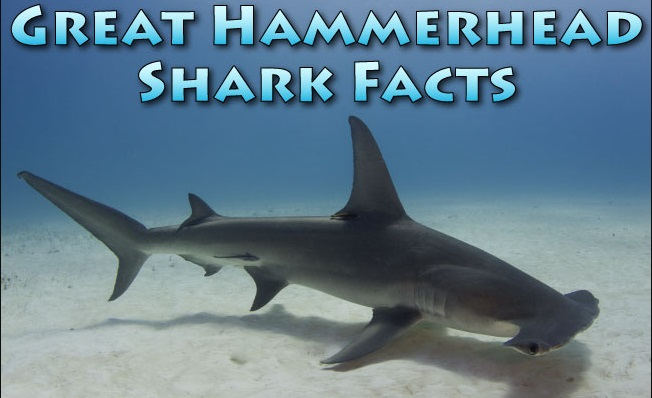
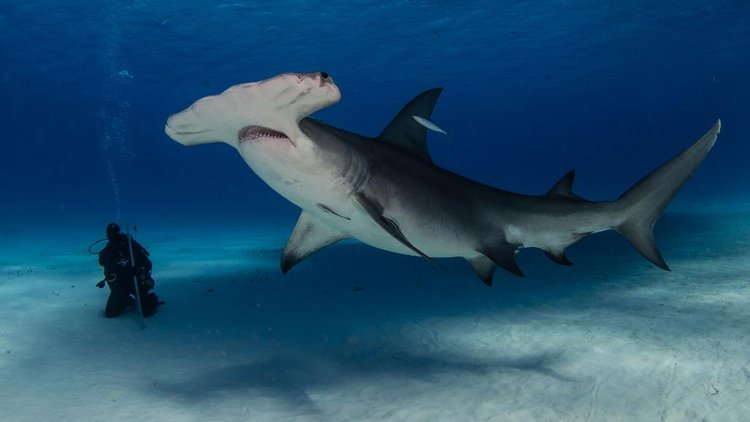
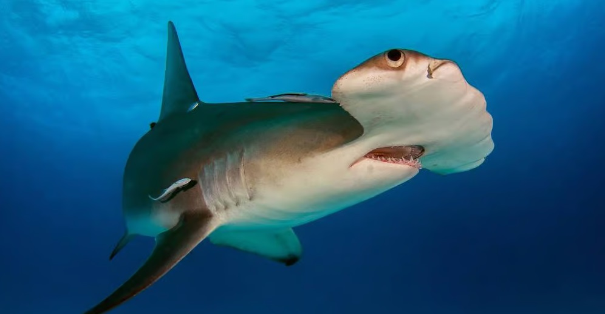

Hammerhead!

More about it
The hammerhead sharks are a group of sharks that form the family Sphyrnidae, named for the unusual and distinctive form of their heads, which are flattened and laterally extended into a cephalofoil (a T-shape or "hammer"). The shark's eyes are placed one on either end of this T-shaped structure, with their small mouths directly centered and underneath. Most hammerhead species are placed in the genus Sphyrna, while the winghead shark is placed in its own genus, Eusphyra. Many different— but not necessarily mutually exclusive—functions have been postulated for the cephalofoil, including sensory reception, manoeuvering, and prey manipulation. The cephalofoil gives the shark superior binocular vision and depth perception.
Hammerheads are found worldwide, preferring life in warmer waters along coastlines and continental shelves. Unlike most sharks, some hammerhead species will congregate and swim in large schools during the day, becoming solitary hunters at night.

The known species range from 0.9 to 6.0 m (2 ft 11 in to 19 ft 8 in) in length and weigh 3–580 kg (6.6–1,300 lb).One specimen caught off the Florida coast in 1906 weighed over 680 kg (1,500 lb). They are usually light gray and have a greenish tint. Their bellies are white, which allows them to blend into the background when viewed from below and sneak up to their prey. Their heads have lateral projections that give them a hammer-like shape. While overall similar, this shape differs somewhat between species; examples are: a distinct T-shape in the great hammerhead, a rounded head with a central notch in the scalloped hammerhead, and an unnotched rounded head in the smooth hammerhead.

Hammerheads have disproportionately small mouths compared to other shark species. Some species are also known to form schools.In the evening, like most other sharks, they become solitary hunters.[citation needed] National Geographic explained that hammerheads can be found in warm, tropical waters, but during the summer, they participate in a mass migration to search for cooler waters.
More information can be found in Wikipedia